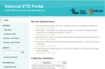
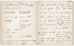
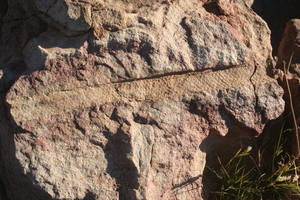

Notable Projects
|

ETD Portal Software
The ETD (Electronic Thesis and Dissertations) repository and portal software enables the creation of federated services by leveraging the OAI-PMH protocol. The software is composed of three distinct components, each of which operates fairly independently of the other.

Bleek & Lloyd Collection
The digital Bleek and Lloyd collection is an online catalogue that was developed to store and enable access to digitised manuscripts of the life of the |Xam and !Kun Bushman people of Southern Africa.

SARU Archeology database
The Department of Archaeology's Spatial Archaeology Research Unit (SARU) at the University of Cape Town has been compiling archaeological collections since the early 1950s. These collections are predominantly in the form of site records and corresponding artifacts within the vicinity of the sites. |
Last updated on February 14, 2017@ 19:04:19 GMT+2